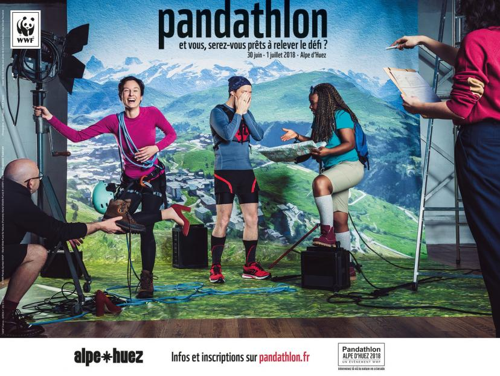
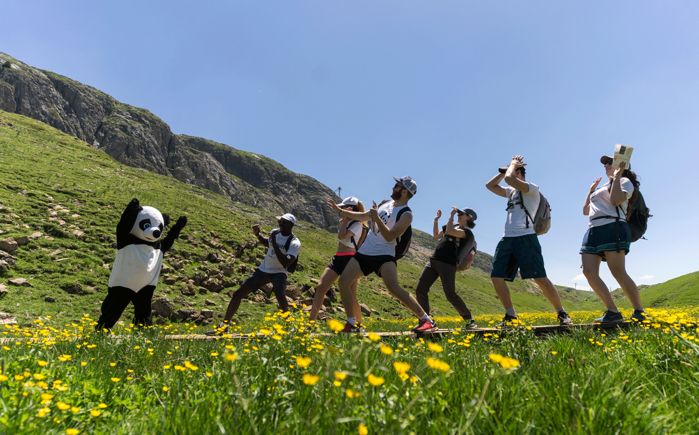
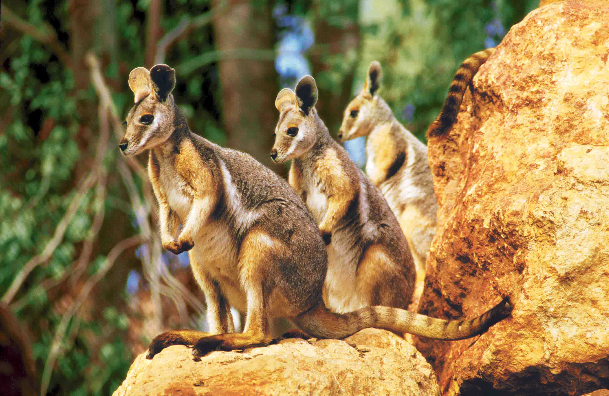
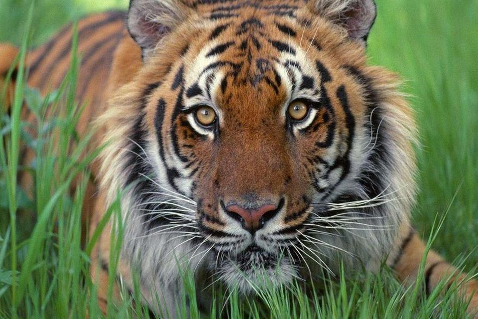
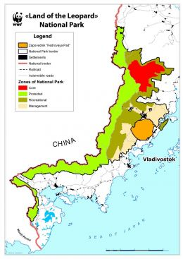

Le WWF France s’est mobilisé depuis 2018 pour aboutir à l’élaboration d’un plan de conservation du lynx en partenariat avec la Société Française pour l'Etude et la Protection des Mammifères.
Afin de financer le travail de rédaction d’un plan national de restauration des populations de lynx, le WWF a organisé un événement éco-sportif, le Pandathlon en juin 2018 & 2019 à l'Alpe d'Huez.
Coordonnée par le WWF Allemagne, cette journée du Lynx est une initiative du projet transfrontalier 3Lynx financé par le programme Interreg Europe Centrale avec pour partenaire principal le Ministère de l’Environnement de République Tchèque.
Le projet poursuit trois objectifs principaux : le suivi de la population de lynx ,
la préparation d'une stratégie de conservation du lynx au niveau de la population et la coopération avec les parties prenantes (en particulier les chasseurs, les forestiers et les propriétaires fonciers, qui sont souvent en contact direct avec le lynx).
La planification de la stratégie de conservation a défini des phases qui consistent à collecter des données sur l'espèce, à analyser les menaces, à préparer un plan d'action, puis à mettre en œuvre ce plan et à surveiller son efficacité.
En 2017 ils ont établi un terrain d’entente transnational pour la surveillance et la gestion du lynx
et crée une base de données de surveillance du lynx en ligne et un logiciel d'analyse de données permettant un partage transnational facile et sûr des données.
De 2018 à 2020, ils ont mit en œuvre les plans pilotes de surveillance .
Ceux-ci contiennait les principaux chiffres et informations nécessaires à une évaluation continue de l’état et de la viabilité de la population. Il a permis de créer une stratégie de conservation et une réponse rapide aux menaces.
La dernière étape consiste à mettre en place des accords transnationaux durables pour la conservation du lynx dans un contexte politique multinational.


Pour préserver les rhinocéros, le WWF agit sur tous les fronts simultanément et s’attaque aux principales menaces en renforçant les aires protégées en Afrique et en Asie, en préservant l’habitat du rhinocéros et en contribuant à éradiquer le commerce illégal de corne. Le WWF est l’une des seules organisations qui tente actuellement de réduire les menaces pesant sur les rhinocéros. Le WWF travaille avec TRAFFIC, l’initiative de « lutte contre la criminalité liée aux espèces sauvages » pour enquêter, identifier et démanteler les réseaux responsables du braconnage et du commerce illégal de corne de rhinocéros, ainsi que pour faire diminuer la demande. Pour lutter contre le braconnage le WWf a mis en place des équipes anti-braconnage qui effectue des patrouilles dans la Réserve nationale du Masai Mara, au Kenya et des puces, ou « microchips » ont préalablement été posées sur les rhinocéros par le Kenya Wild Life et financées par le WWF. Les effort du WWF commencent à porter leurs fruits ! Parmi les cinq espèces qui survivent de nos jours, les deux plus grandes ont vu leurs effectifs augmenter de façon significative. Le rhinocéros blanc d’Afrique n’est plus menacé et le rhinocéros unicorne d’Asie est passé de la catégorie « En danger » à « Vulnérable ». Les effectifs de rhinocéros noir d’Afrique ont également augmenté depuis 1995, même si l’on est loin de ceux d’il y a 50 ans.
Le WWF travaille avec des groupes communautaires pour mener des études sur les populations connues de wallabies des rochers. Cela permet de définir et mettre en place des mesures efficaces pour aider l’espèce à se rétablir. le WWF s’engage pour la protection des zones d’habitation des wallabies des rochers en s’efforçant de faire prendre en considération la survie de l’espèce dans les différents projets de développement. ils menent des campagnes de sensibilisation auprès des communautés locales pour leur faire prendre conscience des services écosystémiques rendus par les marsupiaux, et donc de la nécessité de s’impliquer dans leur protection. Via le "Réseau des espèces menacées" australien auquel participe le gouvernement australien, le WWF soutient des projets visant à lutter contre les feux, à renforcer la surveillance des populations de wallabies des rochers, à mieux réguler les prédateurs ou encore à améliorer la cohabitation entre les propriétaires terriens et les marsupiaux.

Depuis 2010, le WWF et les gouvernements des 13 pays de l’aire de répartition du tigre travaillent pour doubler la population de tigres sauvages.
Heureusement, la nature est de notre côté. Le tigre est une espèce qui se reproduit facilement, pour peu qu’il ait assez de proies.
Le WWF travaille avec l’organisation TRAFFIC pour maîtriser le commerce des produits dérivés du tigre et faire en sorte que ce commerce ne soit plus le moteur du braconnage et donc une menace pour les tigres sauvages.
La stratégie du WWF à long terme vise, entre autres, à fermer les marchés de produits dérivés du tigre et également à empêcher toute légalisation de produits issus du braconnage du tigre.
Le WWF travaille à la restauration des populations de tigres dans au moins 20% de leur ancienne aire de répartition, particulièrement dans 13 zones prioritaires.
Cela implique le rétablissement des populations de tigres et de celles de leurs proies, par le biais d’une meilleure gestion des aires protégées et du recrutement d’un plus grand nombre de parties prenantes locales dans la lutte anti-braconnage.
Le WWF travaille avec bon nombre de groupes d’influence dans les pays de l’aire de répartition du tigre, les gouvernements, les coalitions régionales, les institutions multilatérales et internationales afin de s’assurer que la préservation de l’habitat du tigre soit intégrée dans les plans d’aménagement du territoire et d’aider à développer et capitaliser un fond fiduciaire régional pour la conservation du tigre.


Partout dans le monde où l’homme et le loup sont en conflit, le WWF développe des programmes et mène des campagnes de sensibilisation pour parvenir à une cohabitation apaisée entre les grands carnivores et les activités humaines, en particulier l'élevage. Pendant plus de 15 ans, le WWf a soutenu l’association Ferus pour son programme d’aide aux éleveurs et aux bergers "Pastoraloup" et "Parole de loup visant" à informer les habitants et les touristes dans les régions où la présence du loup est forte. Depuis 2021 le WWF a lancé son propre programme "Entre Chien et Loup", dont l'objectif est de faciliter la cohabitation entre le loup et l’élevage pastoral de montagne. ce programme est constitué de trois missions principalement réalisées par des bénévoles : aide au gardiennage des troupeaux, sensibilisation des utilisateurs de la montagne et aide pour des chantiers pastoraux.

Tout n’est pas perdu. Aujourd’hui, de grandes étendues de forêt - habitat idéal de la panthère - subsistent encore. Si ces zones peuvent être protégées de l’exploitation forestière excessive, des feux de forêts endémiques et des braconniers, il existe une chance de faire croître la population sauvage de cet animal emblématique. En 1998, le gouvernement russe a adopté une stratégie pour la préservation de la panthère de l’Amour. En 2012, les autorités russes ont créé le parc national du "Land of the leopard" qui s’étend sur quelques 262 000 hectares au sud-ouest de la province du Primorié, dans l’Extrême-Orient russe, et couvre environ 60 % de l’habitat du félin. Plus important encore, le parc abrite toutes les aires de reproduction du léopard de l’Amour. Le WWF apporte son soutien aux activités de lutte contre le braconnage, dans la réserve naturelle de Barsovy, ainsi que dans tout l’habitat de la panthère de l’Amour et met en place des programmes pour faire cesser le trafic de produits dérivés de panthères de l’Amour et pour accroître la population d’ongulés (cerf, chevreuils, etc.) qui constituent ses proies principales dans son d’habitat. En 2007, le WWF et d’autres défenseurs de l’environnement ont fait pression sur le gouvernement russe pour qu’il modifie le tracé d’un oléoduc qui aurait menacé l’habitat de la panthère de l’Amour.


L'objectif du WWF est de réduire les conflits entre le félin et les populations locales, freiner les différents projets d’aménagement susceptibles de réduire l’habitat naturel de l’espèce et contribuer à lutter contre le commerce illégal de la panthère des neiges. Le WWF participe notamment à la construction de bergeries, permettant de mieux protéger les troupeaux domestiques face au risque de prédation exercé par la panthère, et contribue à la mise en œuvre de systèmes d’indemnisation pour compenser les pertes subies par les fermiers en cas d’attaque. En 2015, douze États de l’Asie centrale adoptait le « Global Snow Leopard and Ecosystem Protection », le premier grand plan d’action lancé par le WWF pour les panthères des neiges.